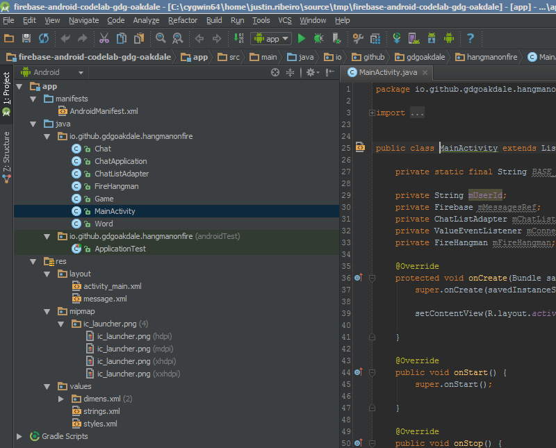
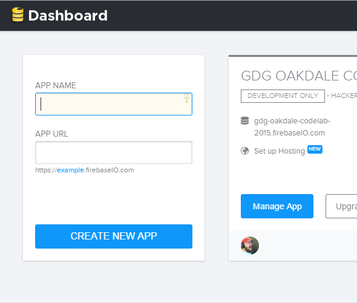
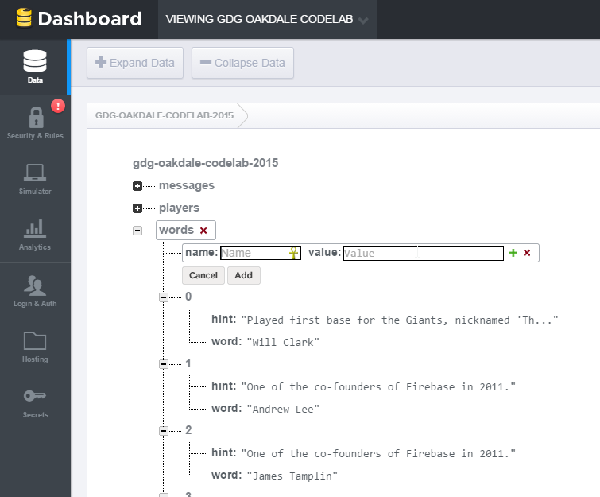

Getting started using Firebase as seen at a April 2015 meetup at GDG Oakdale.
This codelab is designed to help you learn about using Firebase. During this lab, we're going to build a variation of the classic game Hangman.
Documentation! You can never have enough of it and during this codelab you may find yourself looking for one more method to go that extra mile. Docs you may find useful include:
To help make things easier, we've defined a base starter project that can be used with Android Studio. You can pull this branch from base-solution:
git checkout -b base-solution origin/base-solutionOnce you've pulled the project from the git branch, you can import the project in Android Studio via File » Import Project. Once the project has imported, you'll see:
Now, let's create a new project within our Firebase account:
Now that we have an endpoint, let's wire up Firebase in MainActivity.java:
public class MainActivity extends Activity {
private static final String BASE_FIREBASE_URL = "YOUR_ENDPOINT_HERE";
private String mUserId;
private Firebase mMessagesRef;
...
Now we wire up our connection in our onStart():
mConnectedListener = mMessagesRef.getRoot().child(".info/connected").addValueEventListener(new ValueEventListener() {
@Override
public void onDataChange(DataSnapshot dataSnapshot) {
boolean connected = (Boolean) dataSnapshot.getValue();
if (connected) {
Toast.makeText(MainActivity.this, "Connected to Firebase", Toast.LENGTH_SHORT).show();
} else {
Toast.makeText(MainActivity.this, "Disconnected from Firebase", Toast.LENGTH_SHORT).show();
}
}
@Override
public void onCancelled(FirebaseError firebaseError) {
// No-op
}
});
Let's start with setting a reference to our child to get our messages in our onCreate():
this.mMessagesRef = new Firebase(this.BASE_FIREBASE_URL).child("messages");
Since our base solution comes with a layout, let's create some hooks so we can interact and send messages:
EditText messageText = (EditText)findViewById(R.id.messageInput);
messageText.setOnEditorActionListener(new TextView.OnEditorActionListener() {
@Override
public boolean onEditorAction(TextView v, int actionId, KeyEvent event) {
if (actionId == EditorInfo.IME_NULL && event.getAction() == KeyEvent.ACTION_DOWN) {
sendMessage();
}
return true;
}
});
Button sendButton = (Button)findViewById(R.id.sendButton);
sendButton.setOnClickListener(new View.OnClickListener() {
@Override
public void onClick(View v) {
sendMessage();
}
});
In the code above, we can see we have a defined method called sendMessage(). Let's update that method such that we send our message to Firebase:
EditText inputText = (EditText)findViewById(R.id.messageInput);
String message = inputText.getText().toString();
if(!message.equals("")) {
Chat chat = new Chat(this.mUserId, message, this.mUserId);
this.mMessagesRef.push().setValue(chat);
}
inputText.setText("");
Great! But now we need to get our messages into our application. For that, we'll use a listview and some bindings in onStart():
final ListView listView = (ListView) findViewById(R.id.list);
mChatListAdapter = new ChatListAdapter(mMessagesRef.limitToLast(20), this, R.layout.message);
listView.setAdapter(mChatListAdapter);
mChatListAdapter.registerDataSetObserver(new DataSetObserver() {
@Override
public void onChanged() {
super.onChanged();
listView.setSelection(mChatListAdapter.getCount() - 1);
}
});
Tip: to make life a little easier, we've added the ChatListAdapter into the base starter project for this codelab. Take a look with that adapter to see how the callout to Firebase is completed.
With our initial code we can send messages and receive, and our messages are now synced to Firebase and all connected clients.
To verify the messages are being sent, go directly to your Firebase url in your browser. This is the Firebase Dashboard where you can view / edit your existing data.
How does one build our Hangman on Fire application? We need to lay some ground rules:
Tip: We understand that you could do a lot of fancy things with this, but let's keep it simple to start!
We're going to build a class called FireHangman. We can hash out the basic methods that we'll need:
What this looks like mocked out in code:
public FireHangman (String firebaseURL, String userId) {
}
public void StartGame() {
}
public void Guess(String letter) {
}
Tip: We've defined this structure in the base starter project as well as some utility methods; feel free to change as you please!
This will help us get started. Now let's start building our Hangman on Fire game logic.
Let's instantiate variables to our FireHangman class:
this.mBaseRef = new Firebase(firebaseURL);
this.mMessagesRef = this.mBaseRef.child("messages");
this.mPlayersRef = this.mBaseRef.child("players");
this.mGameRef = this.mBaseRef.child("game");
this.mWordsRef = this.mBaseRef.child("words");
this.mUserId = userId;Now we need to set ourselves as a player (or verify that we already exist):
mPlayersRef.runTransaction(new Transaction.Handler() {
@Override
public Transaction.Result doTransaction(MutableData mutableData) {
GenericTypeIndicator<List<String>> t= new GenericTypeIndicator<List<String>>() {};
playerList = mutableData.getValue(t);
if(playerList == null) {
playerList = new ArrayList();
}
if (!playerList.contains(mUserId)) {
playerList.add(mUserId);
}
mPlayerId = playerList.indexOf(mUserId);
mutableData.setValue(playerList);
return Transaction.success(mutableData);
}
@Override
public void onComplete(FirebaseError firebaseError, boolean b, DataSnapshot dataSnapshot) {
}
}); A new piece added above is using runTransaction. This allows us to ensure other players don't overwrite the value stored in playerList.
For more information on Firebase transactions see Firebase.runTransaction()
Finally, let's fire up our game in MainActivity.java in our onCreate():
// Method in base starter project that sets this.mUserId
setupUsername();
this.mMessagesRef = new Firebase(this.BASE_FIREBASE_URL).child("messages");
this.mFireHangman = new FireHangman(this.BASE_FIREBASE_URL, this.mUserId);Lastly, we need to give our game a way to communicate with our players. Notice we're using the same process as the chat messages are being handled.
Now that we have the basics of our player setup, we can now begin building the methods to start our game. First things first: we need some words. For this codelab, we can simply add words as a child to our tree. We can use the following data structure as a sample:
{
"hint": "One of the co-founders of Firebase in 2011.",
"word": "Andrew Lee"
}
We could make a method to push this data, but we can use a cool feature of the Firebase dashboard and add/edit data on-the-fly:
Now that we have some data, we can pull that data for use in our constructor:
mWordsRef.addValueEventListener(new ValueEventListener() {
@Override
public void onDataChange(DataSnapshot dataSnapshot) {
GenericTypeIndicator<List<Word>> t = new GenericTypeIndicator<List<Word>>() {};
mWords = dataSnapshot.getValue(t);
}
@Override
public void onCancelled(FirebaseError firebaseError) {
// No-op
}
});
Now that we have some words, let's update our StartGame() in FireHangman.java:
public void StartGame() {
if(this.mIsGameRunning) {
BotSays("Hey, pay attention. We've already started a game.");
BotSays("The current hint is: " + this.mCurrentGame.getMessage());
}
else {
SetRandomWord();
}
}
At this point we can define SetRandomWord() to select a random word and send our game state out to players. Since we've loaded our words into mWords, we handle this via:
Random random = new Random();
int randomNum = random.nextInt(this.mWords.size() - 1);
Word selectedWord = this.mWords.get(randomNum);
This only gets us half way there; we need some means to tell everyone who's playing our game what's going on. For this, we need to tell Firebase about the state of our game:
Game game = new Game();
game.setWord(selectedWord.getWord());
game.setMessage(selectedWord.getHint());
game.setWordState(GetBlanksForWord(selectedWord.getWord()));
this.mGameRef.push().setValue(game);
BotSays("New Game started! Word/Phrase: " + GetBlanksForWord(selectedWord.getWord()));
BotSays("The current hint is: " + selectedWord.getHint());
Tip: Why aren't we setting all the game state fields? Check the Game class constructor for the answer!
Our game state contains the following fields:
We also need to tell the first player that they need to guess:
mPlayersRef.child("0").addListenerForSingleValueEvent(new ValueEventListener() {
@Override
public void onDataChange(DataSnapshot dataSnapshot) {
String player = dataSnapshot.getValue(String.class);
BotSays("It's your turn " + player + "! Guess with /guess {{letter}}");
}
@Override
public void onCancelled(FirebaseError firebaseError) {
// No-op
}
});
But how do we tell if the mIsGameRunning is set? We'll need to update our constructor to add a few hooks to listen for changes to our game state:
mGameRef.addChildEventListener(new ChildEventListener() {
@Override
public void onChildAdded(DataSnapshot dataSnapshot, String s) {
if(dataSnapshot.getValue() == null) {
mIsGameRunning = false;
}
else {
mIsGameRunning = true;
mCurrentGameRef = mGameRef.child(dataSnapshot.getKey());
mCurrentGame = dataSnapshot.getValue(Game.class);
if(mCurrentGame.getWord().equals(mCurrentGame.getWordState()) || mCurrentGame.getLeft() == 0) {
Reset();
}
}
}
@Override
public void onChildChanged(DataSnapshot dataSnapshot, String s) {
if(dataSnapshot.getValue() == null) {
mIsGameRunning = false;
}
else {
mIsGameRunning = true;
mCurrentGameRef = mGameRef.child(dataSnapshot.getKey());
mCurrentGame = dataSnapshot.getValue(Game.class);
if(mCurrentGame.getWord().equals(mCurrentGame.getWordState()) || mCurrentGame.getLeft() == 0) {
Reset();
}
}
}
...
});
Now when we push our game state out on either StartGame() or future updates, we can update our players on what's happening.
Finally, we need some means to start our game from the chat. Let's update our sendMessage() handler to do a check for the "/start" command:
EditText inputText = (EditText)findViewById(R.id.messageInput);
String message = inputText.getText().toString();
if(message.equals("/start")){
this.mFireHangman.StartGame();
}
else if(!message.equals("")) {
Chat chat = new Chat(this.mUserId, message, this.mUserId);
this.mMessagesRef.push().setValue(chat);
}
inputText.setText("");
At this point, we have general chat, players, and the start of a game. But now we need to handle guesses and player turns so that we can actually finish a game! Let's start working on our Guess() method in FireHangman.java.
Unlike our StartGame() method, guess takes an input from the user and checks to see if we have a hit. But even before we do that, we should probably check if it's our turn:
if(this.mCurrentGame.getTurn() != this.mPlayerId){
BotSays("Whooaaa there " + this.mUserId + ", it's not your turn. Slow your roll.");
}
else {
// Our logic
}
Now that we know whether it's our turn our not, it's time to start guessing. Before we can even check our letter, first let's setup some logic we're going to need and then we can check our selected word:
this.mCurrentGame.setWordState(UpdateBlanksForWord(letter));
this.mCurrentGame.setUsedLetters(this.mCurrentGame.getUsedLetters() + letter);
if(this.mCurrentGame.getWord().indexOf(letter) >= 0) {
BotSays("We have a hit captain!");
}
else {
BotSays("We have missed, the meter grows towards death.");
}
Next, let's focus on the happy case where we're winning and have matched a letter. We know we need to update the game state and let people know who's turn it is (in this case, a match means the player keeps guessing until a miss occurs), but we also need to account for the case where we win:
if(this.mCurrentGame.getWord().indexOf(letter) >= 0) {
BotSays("We have a hit captain!");
if(this.mCurrentGame.getWord().equals(this.mCurrentGame.getWordState())) {
BotSays("Winner winner firebase dinner! You did it " + this.mUserId + "! Answer:" + this.mCurrentGame.getWord());
}
else {
BotSays("Turns left: " + this.mCurrentGame.getLeft());
BotSays("Word state: " + this.mCurrentGame.getWordState());
}
}
Not too complex: we check the mCurrentGame.getWord() against the updated word state and if they match, we know the player has won the game. If not, we can simply let people know that the word state has changed and can update our existing game state.
What happens if we miss a letter? We'll need to some additional work. One, we have to change the player turn. Two, we have to check if the game is over due to running out of guesses. Three, we have to inform the next player it's their turn.
if(this.mCurrentGame.getWord().indexOf(letter) >= 0) {
...
}
else {
BotSays("We have missed, the meter grows towards death.");
this.mCurrentGame.setLeft(this.mCurrentGame.getLeft() - 1);
if(this.mCurrentGame.getLeft() == 0) {
BotSays("It's game over mannnnn! Answer was: " + this.mCurrentGame.getWord());
}
else {
BotSays("Turns left: " + this.mCurrentGame.getLeft());
BotSays("Word state: " + this.mCurrentGame.getWordState());
mPlayersRef.child(Integer.toString(this.mPlayerId + 1)).addListenerForSingleValueEvent(new ValueEventListener() {
@Override
public void onDataChange(DataSnapshot dataSnapshot) {
int nextTurn = 0;
if (dataSnapshot.getValue() != null) {
nextTurn = mPlayerId + 1;
}
mCurrentGame.setTurn(nextTurn);
mCurrentGameRef.setValue(mCurrentGame);
mPlayersRef.child(Integer.toString(nextTurn)).addListenerForSingleValueEvent(new ValueEventListener() {
@Override
public void onDataChange(DataSnapshot dataSnapshot) {
if(dataSnapshot.getValue() != null) {
BotSays("It's your turn " + dataSnapshot.getValue() + "! Guess with /guess {{letter}}");
}
}
@Override
public void onCancelled(FirebaseError firebaseError) {
// No-op
}
});
}
@Override
public void onCancelled(FirebaseError firebaseError) {
// No-op
}
});
}
}
Things to note in the above code:
this.mCurrentGame.getLeft() == 0, we still push an update to the state of left because we'll need to inform other players the game has ended.mPlayersRef so that we can increment the turn. If that dataSnapshot.getValue() is null, we simply go back to the first player.dataSnapshot.getValue() for the decided user so the bot can send a message.We can make sure all clients are update to date by resetting the game state when the game ends
by updating our onChildChanged() handler:
if(mCurrentGame.getWord().equals(mCurrentGame.getWordState()) || mCurrentGame.getLeft() == 0) {
Reset();
}Our Reset() method is simply defined as:
private void Reset() {
this.mGameRef.removeValue();
this.mIsGameRunning = false;
}
Finally, let's update our sendMessage() handler to do a check for the "/guess {{letter}}" command:
EditText inputText = (EditText)findViewById(R.id.messageInput);
String message = inputText.getText().toString();
if(message.equals("/start")){
this.mFireHangman.StartGame();
}
else if(message.startsWith("/guess")){
String letter = message.replace("/guess", "").trim();
this.mFireHangman.Guess(letter);
}
else if(!message.equals("")) {
Chat chat = new Chat(this.mUserId, message, this.mUserId);
this.mMessagesRef.push().setValue(chat);
}
inputText.setText("");
Congratulations! You have completed this codelab! Have some extra time? Things for consideration: